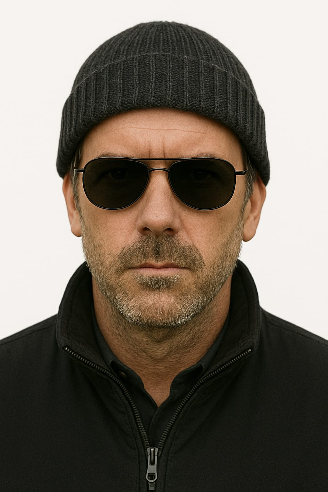
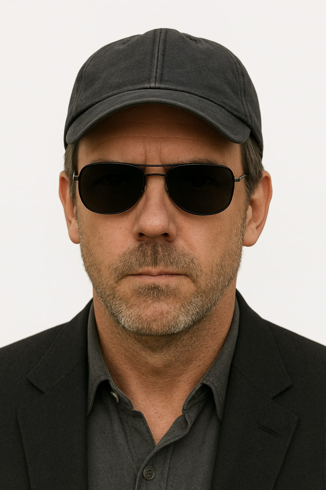
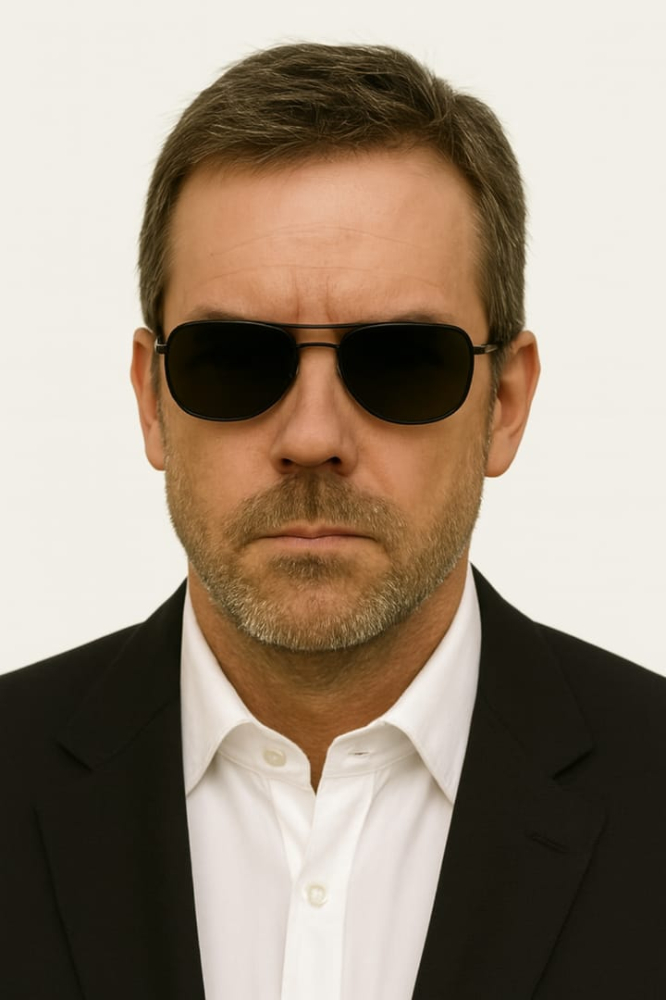
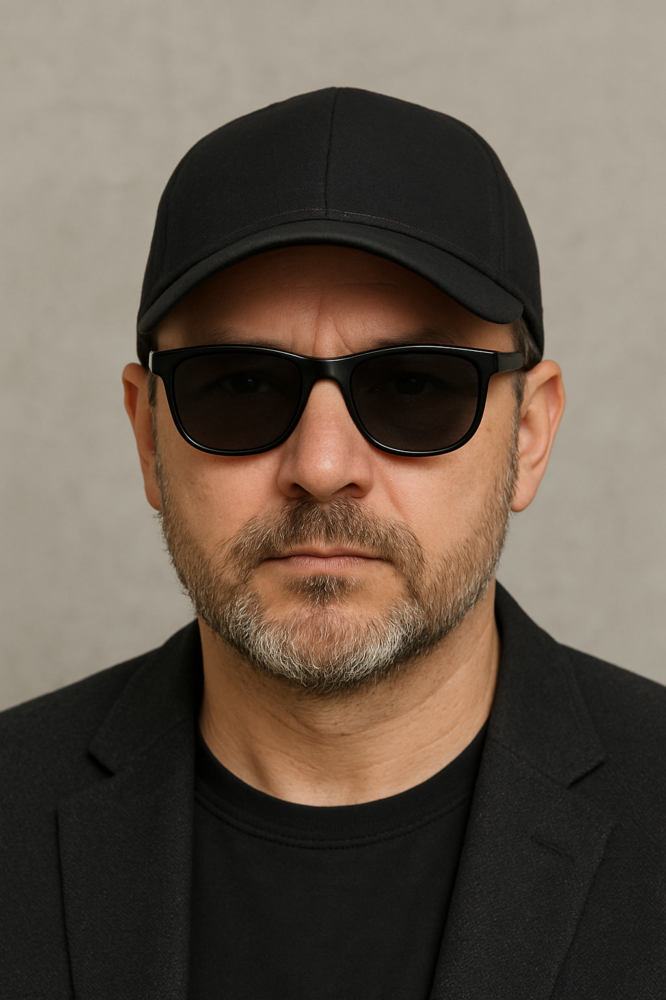
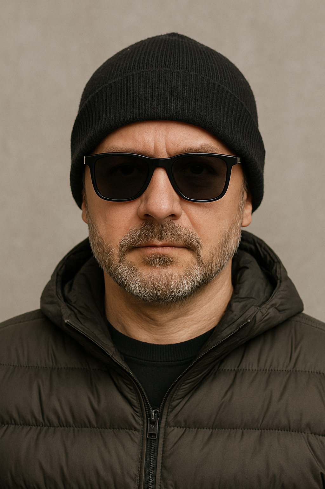
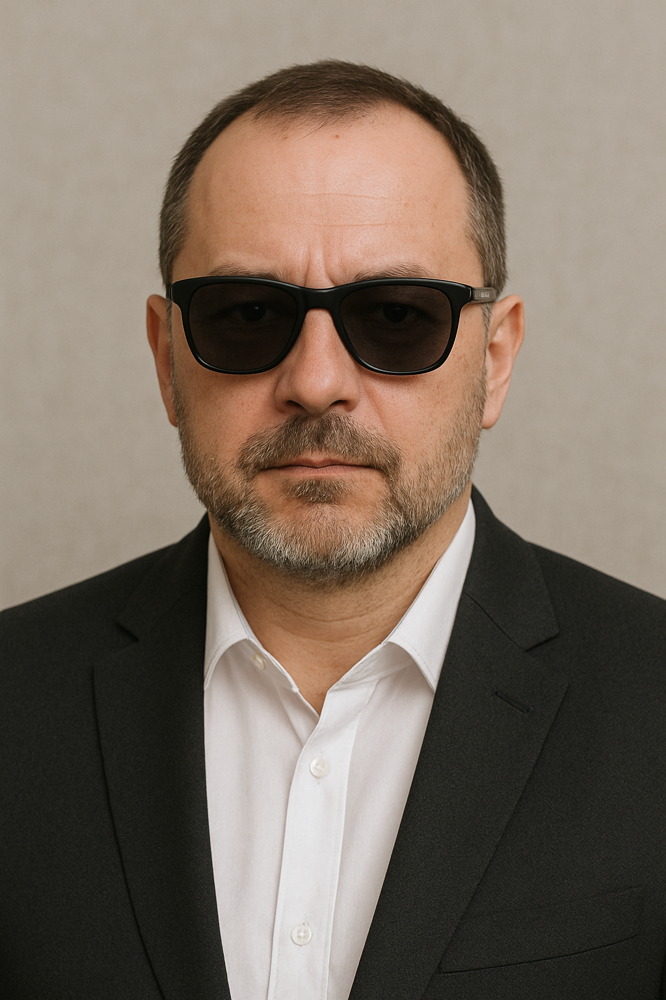
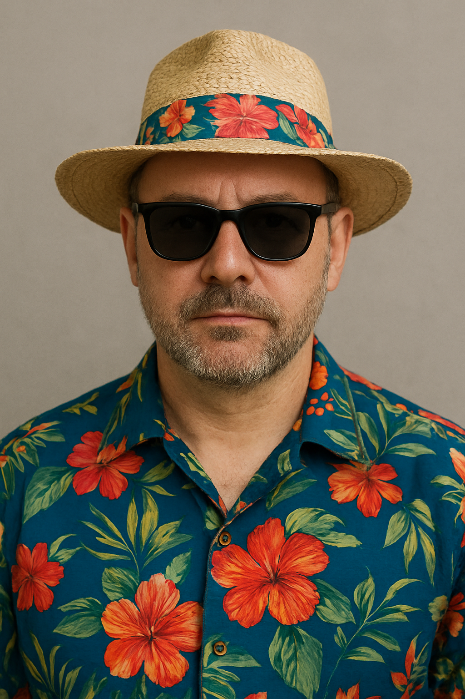

- Компания специализированная на юридическую помощь и услуги для физических и юридических лиц Заполните для бесплатной консультации
.png)
Данные конфиденцальны с соответствии с конституцией
Дополнительно
УслугиО компании Themis
Themis — это современная юридическая компания, объединяющая профессионалов с многолетним опытом работы в различных отраслях права и бизнеса. Мы помогаем нашим клиентам решать самые сложные задачи, сопровождаем их на пути развития и защищаем интересы в любых жизненных и деловых ситуациях.
Мы понимаем, что за каждым делом стоят не просто документы, а реальные люди, их планы, идеи и будущее. Поэтому в нашей работе мы делаем ставку на индивидуальный подход: внимательно выслушиваем клиента, анализируем ситуацию со всех сторон и предлагаем оптимальное решение, которое позволит достичь наилучшего результата.
Команда Themis сочетает в себе профессионализм, ответственность и искреннюю вовлечённость. Мы не ограничиваемся формальными действиями, а всегда стремимся к тому, чтобы наши клиенты чувствовали себя уверенно и спокойно. Будь то юридическая защита, сопровождение бизнеса или консультация — мы работаем так, чтобы у клиента оставалось ощущение надежного партнёрства и полной прозрачности.
Мы ценим доверие и строим долгосрочные отношения, основанные на честности, уважении и результатах. Сотрудничая с нами, вы получаете не просто юридическую помощь, а поддержку, которая помогает развиваться, расти и быть уверенным в завтрашнем дне
Услуги
Представительство в суде
Защита ваших интересов в судебных разбирательствах любой сложности. Подготовка документов, ведение дела, профессиональная защита и отстаивание ваших прав.
Лицензии и разрешения
Сопровождение при получении всех необходимых лицензий и разрешений для ведения бизнеса. Минимизация рисков отказа и ускорение процесса оформления.
Бизнес юрист
Полное юридическое сопровождение предпринимателей и компаний: договоры, сделки, корпоративные вопросы и правовая поддержка на всех этапах бизнеса.
Регистрация авторских прав
Помощь в защите ваших интеллектуальных разработок: регистрация авторских прав, консультации и юридическая поддержка при спорах.
Регистрация юридических лиц
Оформление и регистрация компаний, ТОО, ИП и других форм бизнеса. Подготовка уставных документов и сопровождение на всех этапах.
Миграционная и визовая поддержка
Консультации и помощь иностранным гражданам и компаниям по вопросам виз, разрешений на работу и миграционного законодательства.
Справка о государственной перерегистрации юрлица
Сбор и оформление документов, внесение изменений и получение официальной справки о перерегистрации компании.
.svg) Бухгалтерские услуги
Ведение бухгалтерии, отчётности и налогового сопровождения для бизнеса. Минимизация налоговых рисков и оптимизация финансовой отчетности.
Бухгалтерские услуги
Ведение бухгалтерии, отчётности и налогового сопровождения для бизнеса. Минимизация налоговых рисков и оптимизация финансовой отчетности.
Наши специалисты

Карней Карпатович
Возраст:30 лет
Стаж работы:5 лет
Специальность:бухгалтер,
корпоративный юрист
Карней сочетает опыт ведения бухгалтерии и знание корпоративного права. Его сильная сторона — точность в расчетах и умение выстраивать правовую защиту бизнеса. За 5 лет практики он помог десяткам компаний оптимизировать налогообложение и минимизировать юридические риски.

Дмитрий Пятунович
Возраст:35 лет
Стаж работы:10 лет
Специальность:адвокат,
иммиграционный юрист
Дмитрий — специалист с 10-летним опытом работы в области миграционного законодательства. Он консультирует клиентов по вопросам получения виз, ВНЖ и гражданства, а также защищает интересы в судах и государственных органах. Отличается внимательностью к деталям и индивидуальным подходом.

Клятин Сербский
Возраст:40 лет
Стаж работы:15 лет
Специальность:юрист интеллектуальной собственности
Клятин уже более 15 лет занимается защитой авторских прав, товарных знаков и патентов. Его клиенты — это как начинающие стартапы, так и крупные компании. Он помогает сохранить и защитить интеллектуальные активы, обеспечивая конкурентное преимущество на рынке.
Клиенты и их отзывы
Димон Апельсин
 Я обратился к Клятину Сербскому по вопросу защиты авторских прав на мою работу. Было много нюансов, о которых я раньше даже не задумывался. Он подробно объяснил, какие документы нужно подготовить, как правильно зафиксировать мои права и что делать в случае споров. Особенно понравилось, что он всё рассказывал простым языком, без сложных юридических терминов. Благодаря его опыту удалось быстро и без лишних проблем зарегистрировать мои материалы и защитить их от недобросовестного использования. Я остался очень доволен результатом.Андрей Карапов
 Дмитрий Патунович помог мне с оформлением всех документов по миграции. Ситуация была непростая, и я боялся, что всё затянется на месяцы. Но специалист сразу разложил всё по шагам, подсказал, какие справки собрать, а что можно оформить через него. Очень ценю, что он всегда был на связи, отвечал на вопросы и успокаивал, когда я переживал. В итоге все бумаги оформили вовремя, и я получил нужный результат без лишних нервов. Чувствуется, что он в этой сфере давно работает и прекрасно разбирается в тонкостях закона.Семен Чугун
 Карней Карпатович сопровождал меня по уголовному делу, и честно скажу — без него я бы не справился. Он внимательно выслушал мою ситуацию, предложил несколько вариантов защиты и сразу объяснил, как лучше действовать. Очень понравилось, что он отстаивал мои интересы твёрдо и уверенно, не упуская ни одной детали. На суде проявил себя как грамотный и опытный юрист, что сразу придало мне уверенности. Благодаря его работе удалось добиться максимально благоприятного исхода. Видно, что он не просто юрист, а человек, который реально заботится о клиентахСерега Фикс
 У меня был затяжной спор по гражданскому делу, и я обратился за помощью к Клятину Сербскому. Сначала думал, что это обычная бюрократия, но оказалось, что без специалиста там не обойтись. Он досконально изучил все документы, нашёл слабые места в позиции другой стороны и выстроил чёткую стратегию. Особенно понравилось, что он держал меня в курсе на каждом этапе и объяснял, что и зачем мы делаем. Благодаря этому я чувствовал себя уверенно и понимал, что дело движется в правильном направлении. В итоге мы выиграли спор, и я очень благодарен за его профессионализм и поддержку
Ulitsa Kabdolova 1, Almaty 050000
7 (777) 777 77 77
Themis@gamil.com
Соц-сети